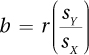
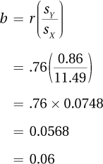
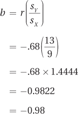

14.1 Simple Linear Regression
 StatClips: Regression: AssumptionsVideo on LaunchPad
StatClips: Regression: AssumptionsVideo on LaunchPad
StatClips: Regression: InferenceVideo on LaunchPad
StatClips: Regression - Introduction and MotivationVideo on LaunchPad
In linear regression, one or more predictor variables are used to predict cases’ scores on an outcome variable. For example:
If a person has X level of depression, what will be his or her level of depression after 12 sessions of cognitive-behavioral therapy?
If we reduce truancy by X amount, how much will the high school graduation rate improve?
If a child is bullied at age X, how will that affect her self-esteem?
What effect does the height of the mother, the height of the father, and the annual family income have on the height of a child?
540
In simple linear regression, one predictor variable, X, is used to predict Y, the outcome variable.
Simple linear regression uses the Pearson r to develop an equation, called a regression equation, to predict Y from X. All the predictions made by a regression equation won’t be perfectly accurate, but using a regression equation helps one to arrive at better decisions overall. Of course, making predictions only makes sense if there is evidence that a relationship exists between X and Y. That means simple linear regression should only be used with a statistically significant Pearson r.
Using a Regression Line for Prediction
To see how linear regression works, let’s start with a straightforward example. Figure 14.1 shows a perfect correlation (r = 1.00) between temperature measured in Fahrenheit and in Celsius. All six data points in Figure 14.1 fall on a straight line.
For these six data points, their values on X (Fahrenheit) and Y (Celsius) are known. For example, the point on the bottom left of the scatterplot has a Fahrenheit value of 32° and a Celsius value of 0°. These six are known, but what about all the other possible Fahrenheit values? If an object’s temperature is measured and found to be 86° Fahrenheit, what would it be in Celsius?
Figure 14.2 shows how to estimate Y for a given value of X, like 86°. In Figure 14.2, the six points have been connected with a line. This line, called the regression line, allows one to find a Y value for any X value. Here’s how to do it:
Draw a vertical line from 86° on the X-axis up to the diagonal line.
Draw a horizontal line over to the Y-axis from the point on the diagonal line.
Estimate the value of Y where the horizontal line intersects the Y-axis, say, 30°.
Thus, the predicted value of Y is approximately 30°.
Before moving on to the next example, let’s add some terminology. The six data points in Figure 14.1 have X scores and Y scores. In the case above, we had an X score (86°F), but no Y score. The Y score that was found, 30°C, is a predicted or estimated value. A predicted value of Y has a special name, Y prime, abbreviated Y′. (Ŷ, called “Y hat,” is also commonly used as an abbreviation for the predicted value of Y.)
541
In Figure 14.1, all the data points fall on a line, so it is clear where to place the regression line. It is less clear what to do in a situation like that found in Figure 14.3, which displays Dr. Paik’s marital satisfaction data from Chapter 13. In that study, a marital therapist randomly selected eight couples and found a statistically significant, positive relationship between the husband’s gender role flexibility and the wife’s marital satisfaction [r(6) = .76, p < .05].
The relationship between gender role flexibility and marital satisfaction is a strong one. And a look at Figure 14.3 shows that it is a linear relationship. But where the best place would be to draw the regression line is not clear. Figure 14.4 illustrates the marital satisfaction data with three different potential lines (labeled I, II, and III). Which one is the best regression line? Which one is the worst?
542
How to Judge Whether Prediction Is Good
To learn how statisticians decide which line is the best, imagine that a memory test is given to all the students at a college. Scores can range from 1.00 to 19.00, and the mean score is calculated to be 10.00. Further, the scores are normally distributed with a standard deviation of 3.00. A frequency distribution of the memory scores is shown in Figure 14.5.
Now, imagine 12 students are randomly selected from this college and a contest is held to guess what their scores on the memory test are. Any prediction from 1.00 to 19.00 is fair and there is a substantial prize for guessing correctly. Nothing is known about the selected students: not their GPAs, years in school, histories of head trauma, or any other fact. As a result, anyone making a prediction is guessing blindly. What to do? A statistician would say, “Guess the mean for each one.” That is, make the same guess, 10.00, twelve times in a row. This is the best strategy for two reasons:
543
First, there is a greater chance of being right guessing the mean than guessing any other value. Look at Figure 14.5—the score at the midpoint, the mean, occurs with the greatest frequency.
Second, the errors will be smaller, on average, if the mean is guessed for each person. Here’s how to think of this. The scores on the memory test range from 1.00 to 19.00, so the most one can be off by guessing the mean (10.00) is 9.00 points. Guessing any other value increases the potential size of the error. For example, if the guess was 14.50 and the student’s score was 2.00, then the guess would be off by 12.50 points.
The best prediction is the one that yields the smallest errors between predicted outcomes and actual outcomes.
The second point, about minimizing errors, is important because it is how statisticians judge prediction. The best prediction is the one that yields the smallest errors between predicted outcomes and actual outcomes. In fact, minimizing errors is how the regression line is defined—it is the best-fitting straight line by the least squares criterion. The least squares criterion means that the prediction errors are squared and the best-fitting line is the one that has the smallest sum of squared errors. Why are we concerned with squared values? Let’s return to Dr. Paik’s study.
Figure 14.6 shows the scatterplot for the marital satisfaction data with line II from Figure 14.4. In Figure 14.6, double-headed arrows are used to mark the distance for the eight cases from their actual values (the dots) to the line. These distances represent errors in prediction: the distance from Y (the wives’ real satisfaction scores) to Y′ (their predicted satisfaction scores) is the error in prediction. Sometimes the errors are small, as for points A, B, and E. Sometimes the errors are large, as for point F.

Look at the top panel in Table 14.1. The top panel shows the Y scores for the eight marital satisfaction cases. The first column gives the actual Y value for each case and the next three columns give the predicted Y scores, one for each of the three lines in Figure 14.4. The first row is for case A, where the wife’s marital satisfaction score is 0.80. Line I predicts her level of marital satisfaction to be higher, 1.32; line II also predicts high with Y′ = 1.03; line III underestimates her satisfaction with a predicted value of 0.30.
544
The bottom left panel in Table 14.1 shows the differences between the actual scores and the predicted scores. These values are sizes of the errors. They are what is left over after Y′ is subtracted out, so they are called residuals. For example, case A in the first row has a Y′ for line I that is off by –0.52 points, for line II off by –0.23 points, and for line III off by 0.50 points. Notice that each column is a mixture of positive and negative residuals, of overestimates and underestimates. For these three lines, the residuals for each column sum to zero, meaning that the positive and negative errors balance each other out. Thus, comparing the sums of the error scores does not make one of these lines stand out over the others. So, how can one differentiate these three lines?
The answer is to square the residual scores. As a result, the squared error scores are all positive (see the bottom panel of Table 14.1) and sum to a positive number when added together. The squared error scores sum to 2.44 for line I, 2.17 for line II, and 3.88 for line III. Linear regression uses the least squares criterion, which minimizes the sum of the squared errors, so we can now conclude that line II is the best-fitting line of these three and line III is the worst-fitting line.
545
Line II is the best-fitting of these three lines, but is it the best-fitting line out of all other possible lines? The regression formula we are about to learn determines the equation for the best-fitting line.
The Linear Regression Equation
Most students remember the formula for a straight line from algebra. The abbreviations may have been different, but it looked something like this:
Y = bX + a
In this equation, Y is the value being calculated; b is the slope of the line; X is the value for which Y is being calculated; and a is the point where the line intersects the Y-axis, the Y-intercept.
The regression line equation, Equation 14.1, is similar, but it calculates Y′, the predicted value of Y, not Y.
Equation 14.1 Formula for Calculating a Regression Line
Y′ = bX + a
where Y′ = predicted value of Y
b = slope of the regression line (Equation 14.2)
X = value of X for which one wants to find Y′
a = Y-intercept of the regression line (Equation 14.3)
In order to apply the regression line formula, three factors need to be known: (1) the X value for which one wants to predict a Y value; (2) the slope, b; and (3) the Y-intercept, a. The first of these, X, does not need to be calculated. It will either be given to or determined by the researcher. But the other two values, the slope and the Y-intercept, need to be calculated in order to apply Equation 14.1.
Understanding Slope
Slope represents the tilt of the line. It tells how much up or down change in Y is predicted for each 1-unit change in X. This is often called “rise over run.”
If the slope is positive, then the line is moving up and to the right. (The slope is positive for direct relationships where increases on one variable are associated with increases on the other variable.)
If the slope is negative, then the line is moving down and to the right. (The slope is negative for inverse relationships. In an inverse relationship, increases in X are associated with decreases in Y.)
If the slope is zero, then the line is horizontal.
546
Here’s the formula for calculating the slope.
Equation 14.2 Formula for the Slope, b, of the Regression Line

where b = slope of the regression line
r = observed correlation between X and Y
sY = standard deviation of the Y scores
sX = standard deviation of the X scores
For Dr. Paik’s marital satisfaction study, r = .76, sY = 0.86, and sX = 11.49. He would calculate the slope as follows:

The slope, 0.06, is positive. This was expected because the correlation coefficient, .76, was positive. The value of the slope, 0.06, means that, on average, for every 1-point increase in a husband’s level of gender role flexibility, there is a predicted increase of 0.06 points in the wife’s level of marital satisfaction. It also means that a 1-point decrease in gender role flexibility is associated with a 0.06-point decrease in marital satisfaction.
It is important to note the careful use of language here. Correlational designs give information about association, not cause and effect. Dr. Paik is careful not to say that a 1-point increase in gender role flexibility causes a 0.06-point increase in marital satisfaction.
Understanding the Y-Intercept
The slope was calculated first because it is needed to calculate a, the Y-intercept. The Y-intercept indicates the spot where the regression line would pass through the Y-axis. It gives information about the “altitude” of the line, how high or low it is:
If the Y-intercept is positive, the line passes through the Y-axis above zero.
If the Y-intercept is negative, the line passes through the Y-axis below zero.
If the Y-intercept is zero, the line passes through the Y-axis at zero.
The bigger the absolute value of the Y-intercept, the further away from zero the intercept passes through the Y-axis.
547
Here is the formula for calculating the Y-intercept.
Equation 14.3 Formula for the Y-Intercept, a, for the Regression Line
a = MY – bMX
where a = Y-intercept for the regression line
MY = mean of the Y scores
b = slope of the regression line (Equation 14.2)
MX = mean of the X scores
Dr. Paik has already calculated the slope and found it to be 0.0568, which he rounded to b = 0.06. Consulting his data, he finds MY = 2.00 and MX = 25.00. Using these values, the Y-intercept is calculated as follows:
a = MY – bMX
= 2.00 – (0.0568 × 25.00)
= 2.00 – (1.4200)
= 0.5800
= 0.58
(Note: Because very precise numbers are needed for an example to work later in the chapter, this equation uses a value of the slope to four decimal places, b = 0.0568.)
The Y-intercept, the spot where the regression line would intersect the Y-axis, is 0.58. Now that the slope, b = 0.06, and the Y-intercept, a = 0.58, are known, Dr. Paik can complete the regression formula, Equation 14.1:
Y′ = bX + a
= 0.06X + 0.58
Predicting Y
Here is how a researcher could apply the formula and use it to draw the regression line. Dr. Paik needs to select an X value for which to predict a Y score. He must select a value that is within the range used to develop the regression formula. So, he selects a gender role flexibility score of 30 and substitutes that for X in Equation 14.1:
Y′ = bX + a
= (0.06 × 30) + 0.58
= 1.8000 + 0.58
= 2.3800
= 2.38
Dr. Paik has just predicted that a man with a gender role flexibility score of 30 will have a partner who rates her level of marital satisfaction as 2.38. Given that marital satisfaction is rated on a 4-point scale like GPA, this means she’s predicted to rate her marriage at the C+ level.
548
Drawing the Regression Line
Putting a regression line into a scatterplot helps to highlight the relationship between the two variables. Any two points can be connected with a straight line, so the regression line can be drawn once two points are known. All Dr. Paik needs is the two points.
The regression equation is meant to make predictions for the range of values it was based on. So, Dr. Paik will find Y′ for the lowest X value (8), and Y′ for the largest (38). (Again, because precise numbers are needed for an example later in the chapter, a four decimal place version of slope b = 0.0568 instead of b = .06 will be used.)
Y′ = bX + a
= (0.0568 × 8) + 0.58
= 0.4544 + 0.58
= 1.0344
= 1.03
Y′ = bX + a
= (0.0568 × 38) + 0.58
= 2.1584 + 0.58
= 2.7384
= 2.74
Dr. Paik now knows two points that anchor the line: (8, 1.03) and (38, 2.74). Figure 14.7 shows the scatterplot with the two points marked and a line drawn through them. Yes, this is the same as line II in Figure 14.4.
Worked Example 14.1
For another example of developing a regression equation from start to finish, imagine the following: A large and representative sample of cigarette smokers (N = 2,500) was obtained in order to see if there were a relationship between how much a person smoked and his or her physical health. To measure amount of smoking, each person reported how many years he or she had been smoking cigarettes. The mean, MX, was 22 years, with a standard deviation of 9. As a measure of physical health, each person’s lung function was measured. This was reported as a percent of the predicted normal level, so lower scores mean worse functioning. A lung function score of 100 would mean that the person’s lung capacity was normal for his or her age and sex. A score of 50 would mean that the smoker’s level of lung function was only 50% of what was expected for a person of the same age and sex. The mean level of function was 76%, with a standard deviation of 13. The average person had been smoking for 22 years and had lungs functioning at 76% of what was expected.
549
Not surprisingly, the relationship between years of smoking and degree of lung function was negative and strong: [r(2,498) = –.68, p < .05]. As years of smoking went up, the percent of normal lung function went down (see the scatterplot in Figure 14.8).
To calculate the slope (b) for the regression line, plug r = –.68, sX = 9, and sY = 13 into Equation 14.2:

550
For the regression line for the years of smoking/lung function data, the slope is b = –0.98. A slope of negative 0.98 means that for every 1-point increase in X, there’s a predicted decrease of 0.98 points in Y. To put this in the context of this example, every year of smoking is associated with an additional decrease of 0.98 percentage points from normal lung function. In this way, a slope can be a meaningful tool for interpreting regression.
To calculate the Y-intercept, one needs the slope, which was just found to be –0.98, and the two means, MX and MY. The predictor variable is years of smoking so MX = 22; the predicted variable is percent of normal function and MY = 76. These values can be plugged into Equation 14.3 to find the Y-intercept:
a = MY – bMX
= 76 – (–0.98 × 22)
= 76 – (–21.5600)
= 76 + (21.5600)
= 97.5600
= 97.56
The Y-intercept for the regression line, which is the predicted value of Y when X = 0, is 97.56. Given b = –0.98 and a = 97.56, it is now possible to complete the regression equation, Equation 14.1:
Y′ = bX + a
= –0.98X + 97.56
This is the regression equation. Regression equations are used to predict a Y score for a case from its score on X. In the present instance, it can be used to predict a smoker’s lung function (Y′) based on how many years he or she has been smoking (X). Let’s see it in action and predict the percentage of normal lung function for a person who has been smoking for eight years. Or, phrased mathematically, if X = 8, what is Y′? Applying Equation 14.1 to answer that question, it is predicted that a person who has been smoking for eight years will have lungs that function at 89.72% of normal capacity:
Y′ = bX + a
= –0.98X + 97.56
= (–0.98 × 8) + 97.56
= –7.8400 + 97.56
= 89.7200
= 89.72
Now let’s draw the regression line. The regression line should only span the range of existing X values. Look at the scatterplot in Figure 14.8 and see that the X values range from 1 to 65. Below, Y′ scores for these two X values are calculated and they are used to draw the regression line seen in Figure 14.9 from (1, 96.58) to (65, 33.86):
551
Y′ = bX + a
= –0.98X + 97.56
= (–0.98 × 1) + 97.56
= –0.9800 + 97.56
= 96.5800
= 96.58
Y′ = bX + a
= –0.98X + 97.56
= (–0.98 × 65) + 97.56
= –63.7000 + 97.56
= 33.8600
= 33.86
A Common Question
Q Predicting that a person who has smoked for eight years will have lungs that function at 89.72% of normal capacity sounds quite exact. Is such a precise prediction accurate?
A No. A prediction like 89.72% is a point estimate. An interval estimate, which gives a range within which Y′ probably falls, is a better way to go. We will discuss such an interval, called a predication interval, in the next section, though calculating the prediction interval is beyond the scope of this text.
552
Practice Problems 14.1
Apply Your Knowledge
14.01 Given r = –.37, sX = 12.88, and sY = 9.33, find the slope.
14.02 Given MX = 10.65, MY = 45.64, and b = 4.54, find the Y-intercept.
14.03 Given a slope of 1.80 and a Y-intercept of –12.42, form a regression equation.
14.04 Given Y′ = 1.50X + 4.50, (a) find the predicted values of Y for X = 2 and X = 12, and (b) draw the regression line.
14.05 Given the regression line to the right, estimate Y′ if X = 40.